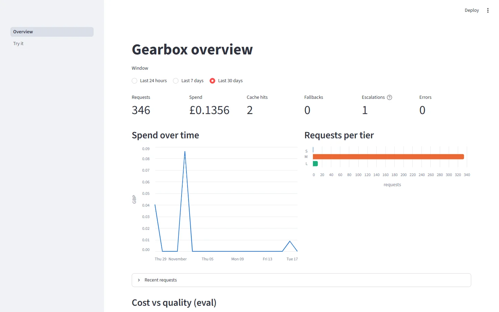
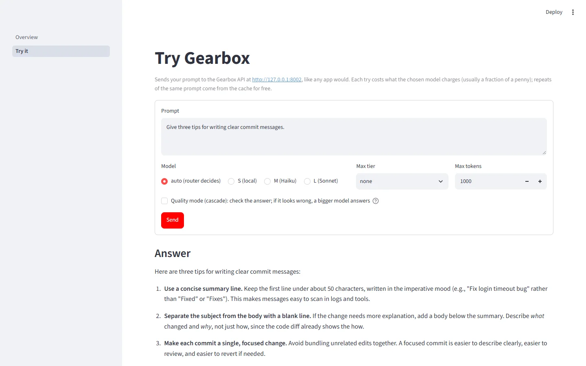

What it does
01Apps call Gearbox exactly as they would call OpenAI or Anthropic. For each request it predicts the cheapest model tier that will still answer well (a free local model, Claude Haiku or Claude Sonnet), calls it, handles failures, and explains its decision in the response headers.
Gearbox in use
02

The request path
03OpenAI-style /v1/chat/completions and Anthropic-style /v1/messages. Existing apps change one base URL.
Response cache, a monthly budget and a max-tier policy.
Embeddings + logistic regression predicts the cheapest tier that will answer well.
Retries fall back to another tier. Optional quality mode checks the answer and escalates if the check fails.
Every request logged with tier, cost, latency and reason, traced to Langfuse and shown on a dashboard.
How the router was chosen
04I built a labelled dataset of 600 prompts, each answered by all three tiers and scored by a judge, giving the cheapest tier that answered well. Four routers were then compared on 119 held-out prompts, against always using Claude Sonnet.
| Strategy | Quality | Cost saved | Routing time |
|---|---|---|---|
| Always the large model (Sonnet) | 100% | 0% | – |
| Keyword rules | 68.0% | 97.5% | < 1 ms |
| LLM classifier (Haiku) | 90.6% | 80.5% | 1,952 ms |
| Embeddings + logistic regression (chosen) | 94.7% | 92.9% | 36 ms |
| Oracle (perfect labels) | 98.4% | 86.8% | – |
95% confidence intervals: 91–94% saved, 90–99% quality. A live run through the API confirmed it (94.5% quality, 92.5% saved).
In production
05- Scout through Gearbox: one line of config, no code changes. 50% cheaper and 34% faster per report on a first 3-question comparison, with the same key points answered.
- Judged live by Dyno: Gearbox's real answers scored 90% quality while saving 91% against always using the large model.
- Monitored with Pitwall: Gearbox reports its cost per 1,000 requests to Pitwall's Prometheus and Grafana.
- Canary releases: new routers, including Pitwall's fine-tuned model, get a share of real traffic first, with safe fallback if they fail.
An honest finding
06On this data, the mid-size model is good enough so often that the best router mostly picks it. Which prompts truly need the large model is hard to predict from the prompt alone. Pitwall later confirmed this independently.